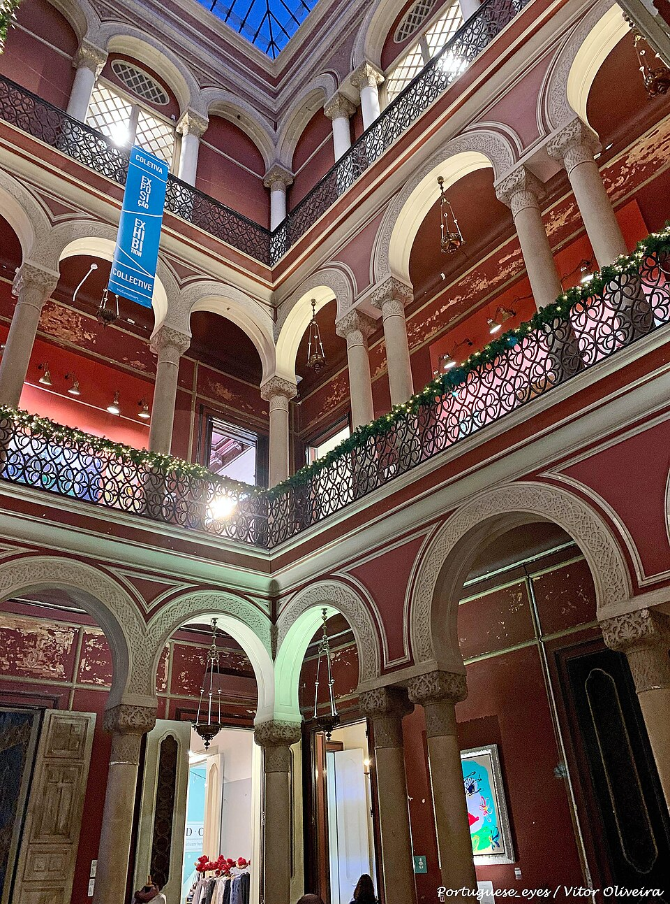
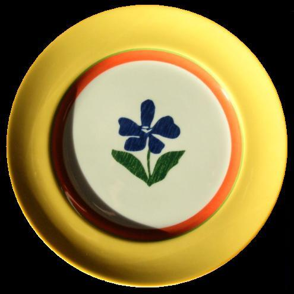
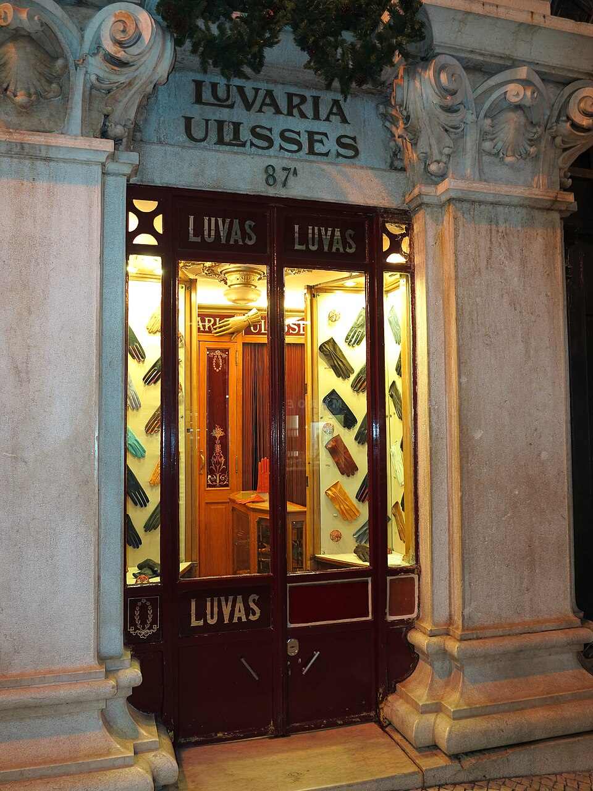
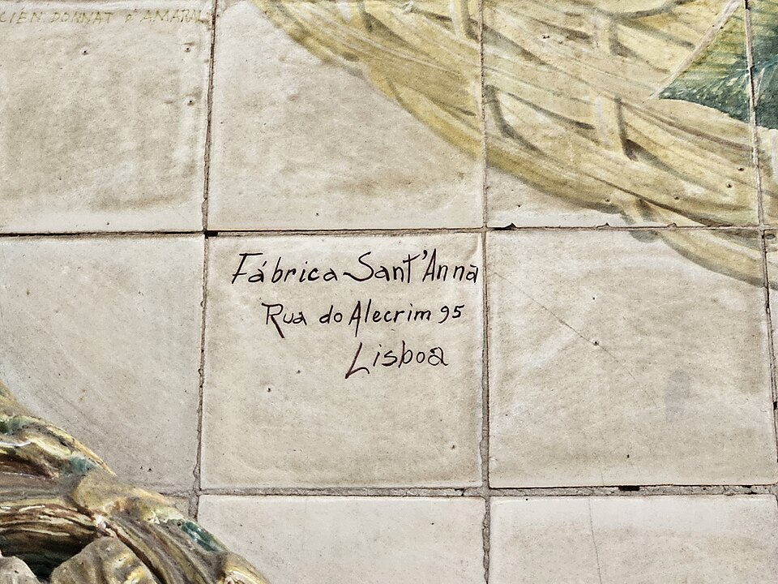
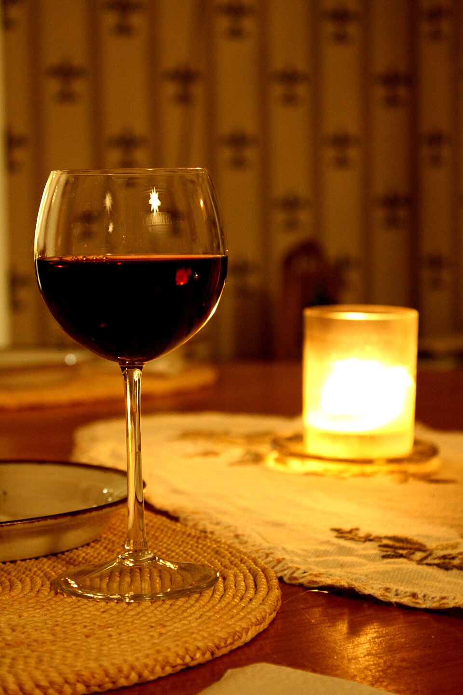

Two Days in Lisbon · Day 2 of 2 · West
Makers & Downtown
A lighter day: a slow morning, then a reborn factory full of makers for lunch and the elegant heart of the city for shops, coffee and a sunset finish. (Belém sits this trip out — the castle on Day 1 is your grand monument.)
The day — park once, ride the tram, explore on foot
The morning's still open — compare four ways to fill it →
LX Factory
the creative-industrial lunch
A 19th-century factory complex under the big bridge, reborn as a village of design shops, murals, cafés and a famous bookstore. Genuinely cool, easy with kids (open courtyards, room to roam) — a slow start to the day and the lunch stop before downtown.


- Lunch in the courtyardLots of options; kids wander between them.
- Ler DevagarA cathedral-scale bookshop with a flying-bicycle sculpture suspended over the shelves.
 Landeau One thing onlyThe legendary chocolate cake (the only thing they make).
Landeau One thing onlyThe legendary chocolate cake (the only thing they make).
Chiado · Bairro Alto · Príncipe Real
the design-and-craft afternoon — then a sunset
Lisbon's elegant heart, and the afternoon to actually shop it: the great Portuguese houses — porcelain, soap, tiles, wool, gloves — strung along a few walkable streets in Chiado, the concept palaces of Príncipe Real, a wine bar, and a viewpoint to close. The trick with five kids: ride up to Príncipe Real and walk the whole thing back downhill to the car — gravity does the work.


The walking line · Príncipe Real → the river
One downhill afternoon
- ① Príncipe Real — the top · taxi up to start
- Livraria da TravessaRua da Escola Politécnica 42–46. A handsome Brazilian bookshop with a café — the calm opening before the square.

EmbaiXada & the garden KidsPraça do Príncipe Real 26. A neo-Moorish palace of design boutiques (ISTO's flagship is inside, for sustainable basics); across the road, a garden with a giant cedar and a playground to burn off the littles.- ② Down Rua da Misericórdia into Chiado
 Miradouro de São Pedro de Alcântara Optional · viewA terraced lookout over the castle and Baixa. Dip in now, or save it for the ~6pm golden hour before dinner — your call on the light.
Miradouro de São Pedro de Alcântara Optional · viewA terraced lookout over the castle and Baixa. Dip in now, or save it for the ~6pm golden hour before dinner — your call on the light.- Claus PortoRua da Misericórdia 135. Hand-wrapped soaps and fragrance since 1887, in a jewel-box flagship with a little barber chair upstairs.
- Igreja de São Roque FreeA plain façade hiding one of Europe's most opulent interiors — chapels of gold, marble and lapis, including the Chapel of St John built in Rome. Free, two minutes off Misericórdia.
- ISTO.Rua Nova da Trindade 22E. The brand's Chiado shop — clean, transparent-priced wardrobe staples made in Portugal.
- ③ Chiado — Largo do Chiado & Rua Garrett
 Manteigaria NataRua do Loreto 2. The pastel de nata, warm from the window — the nata stop.
Manteigaria NataRua do Loreto 2. The pastel de nata, warm from the window — the nata stop.
Vista AlegreLargo do Chiado 20. Royal-supplier porcelain since 1824 — the classic services plus the Siza Vieira and Christian Lacroix collaborations.- A Brasileira & the Pessoa statue Café · photoRua Garrett 120. The 1905 café with Fernando Pessoa cast in bronze on the terrace — a bica at the old counter and the obligatory photo.
 Livraria Bertrand OldestRua Garrett 73. The oldest working bookshop in the world, trading since 1732.
Livraria Bertrand OldestRua Garrett 73. The oldest working bookshop in the world, trading since 1732. A Vida Portuguesa FlagshipRua Anchieta 11. The grand emporium of Portuguese craft — soap, preserves, stationery, tin toys, kitchenware, beautifully packaged. The big souvenir stop.
A Vida Portuguesa FlagshipRua Anchieta 11. The grand emporium of Portuguese craft — soap, preserves, stationery, tin toys, kitchenware, beautifully packaged. The big souvenir stop.- Loja da BurelRua Serpa Pinto 15B. Serra da Estrela wool reborn as felted blankets, coats and cushions — the softest souvenir.

Luvaria Ulisses A marvelRua do Carmo 87A. A tiny 1925 glove shop — leather gloves fitted to your hand on a brass cushion. A short detour east; two minutes, and unforgettable.- Museum of Illusions Optional · kidsRua Ivens 62. Tilt rooms, holograms and brain-tricks — the high-energy break if the kids need one (45–60 min, so only if there's room).
- ④ Down to the river — Alecrim & Rua das Flores

Fábrica Sant'Anna TilesRua do Alecrim 95. Hand-painted azulejos since 1741 — the grown-up version of the tiles the kids painted in Azeitão; they ship.- By the Wine A glassRua das Flores 41. José Maria da Fonseca's bar under a ceiling of green bottles — a glass of the Azeitão Moscatel you saw at source.
- La PazRua das Flores 16. The Porto label's understated menswear and homeware, on the last downhill street to the river.
- Ascensor da Bica Optional · photoThe little funicular climbing its flower-lined street — ride it or just photograph it, a couple of blocks west before the market.

Time Out Market & the car EndBack at the parking — a snack in the market hall if anyone's flagging, then the riverside road home. Dinner: Atalho Real (Príncipe Real, steak, family-friendly) or Senhor Uva (Estrela, natural wine, a grown-up night).